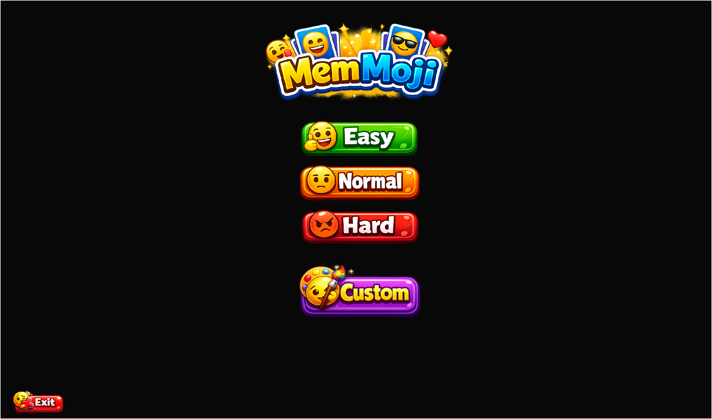
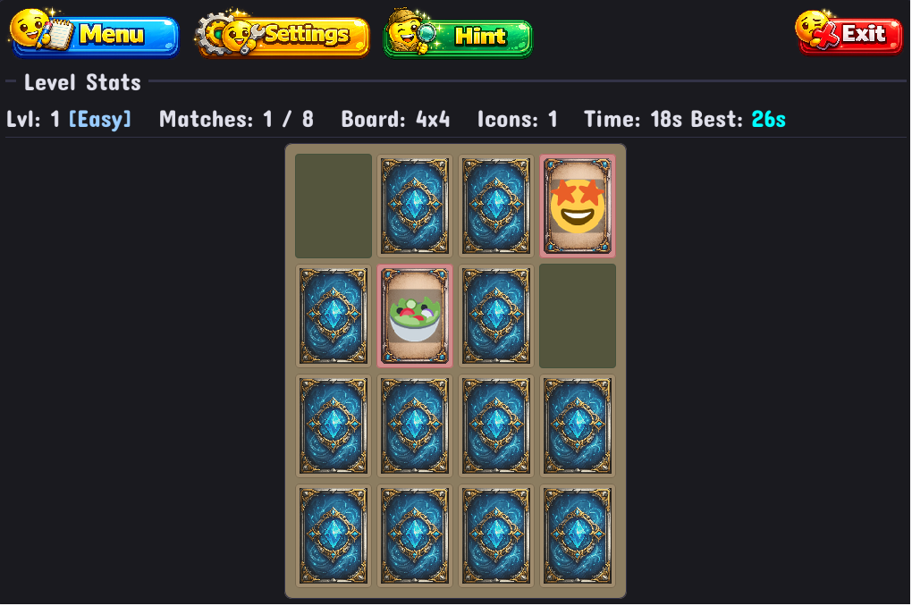
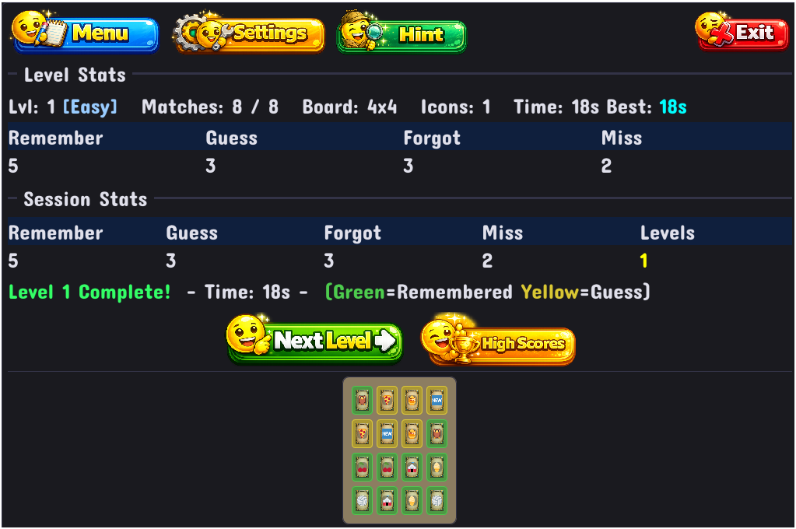
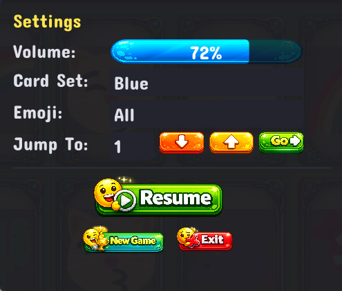

Last Updated: 2026-05-17
How to Play
Starting the Game

- Launch MemMoji — the title screen appears with the game logo.
- Choose a difficulty: Easy, Normal, Hard, or Custom (tap or click the button).
- The game board appears filled with face-down cards — let the fun begin!
Your Goal
Match every pair of cards on the board. Each card has one matching partner somewhere on the board that shows the exact same emoji (or emoji combination). Find all the pairs to complete the level!

Playing a Turn
- Flip a card — click any face-down card. It flips over to show its emoji.
- Flip a second card — click another face-down card. It also flips.
- If they match — great! Both cards are removed from the board. You found a pair!
- If they don't match — both cards stay visible for about 3 seconds so you can study them, then flip back face-down. Pay attention — you'll want to remember where they are!
- Shortcut — if you click any card during the 3-second wait, the mismatched cards flip back immediately so you can keep playing.
- Repeat until all pairs are found.
Card Colors
| Color / Appearance | What It Means |
|---|---|
| Tan (face-down) | Card is hidden — click to flip |
| Tan/cream (face-up) | Card is showing its emoji |
| Green flash | You just matched this pair! |
| Red flash | Not a match — will flip back |
| Pulsing gold border | A hint is pointing here — your match is nearby! |
Completing a Level
When you find all the pairs, the level ends! The board reveals all your matched pairs with color coding to show how well you remembered:
- Green — you remembered where you'd seen this card before. Great memory!
- Gold/yellow — you guessed correctly without having seen it before.

Your completion time is shown. Click the Next Level image button to continue to the next level. Next to it, the High Scores button lets you view a table of the top scores for the current level — this replaces the board area with a ranked table showing Name, Time, and Date. Click Cancel to close the table and return to the board view.
Top Bar
The bar at the top of the screen during play has image buttons for quick actions:
| Button | What It Does |
|---|---|
| Menu | Return to the difficulty select screen (asks for confirmation — choose New Game to confirm or Cancel to go back) |
| Settings (gear icon) | Pause the game and open the settings panel |
| Hint | Reveal the matching card for your currently flipped card (greyed out when unavailable) |
| Exit | Quit the game (always visible on the right side) |
Settings Panel
Open Settings by clicking the gear icon or pressing Escape. The game pauses while settings are open. The panel contains:

- Volume — a blue slider bar. Click or drag anywhere on the bar to adjust the sound effects volume. The current percentage is shown in the center.
- Card Set — click directly on the card set name to open a dropdown and select a different visual style (only shown if multiple sets are installed)
- Emoji Category — click directly on the category name to open a dropdown and switch between different emoji theme packs
- Jump To Level — type a level number or use the orange up/down arrow buttons to adjust, then click the green Go button to jump (up to 10 beyond your highest cleared level)
- Resume — close settings and continue playing
- New Game — return to the difficulty select screen (asks for confirmation)
- Exit — quit the game
Keyboard Shortcuts
- Escape — open/close Settings (pauses/resumes the game)
- F11 — toggle fullscreen mode